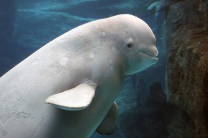

Give Today
We couldn't do our marine conservation work without you.
SeaGuardian is working with you to protect the ocean from India's greatest challenges.
Its Sad

~ Endangered
Beluga Whales
These amazingly beautiful creatures are paying a huge toll for
ocean pollution. In fact, they are considered the most “toxic”
marine animal in the world. Dead beluga whales are often found
heavily saturated with herbicides, pesticides and other
runoff-delivered chemicals. These whales are so pumped full of
toxins that they must be treated as “toxic waste.” As a result
of these exposures, rates of cancer are higher in Beluga Whales
than any other species on land or at sea.
Know More